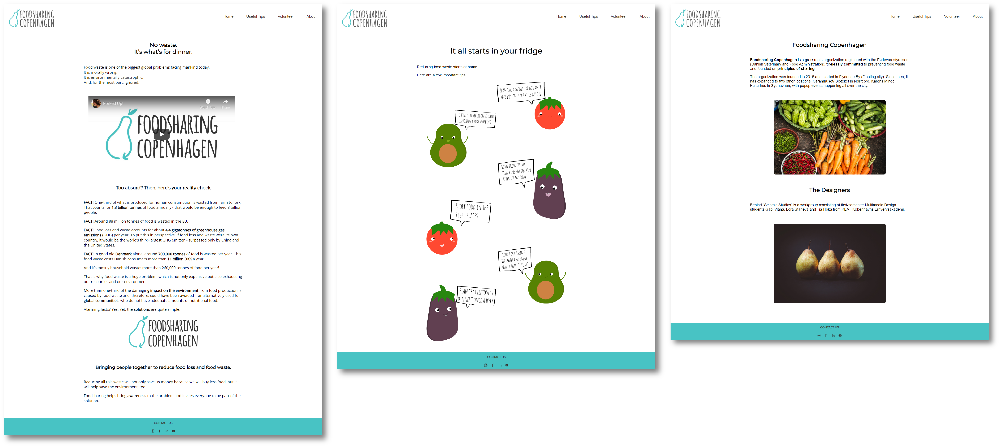
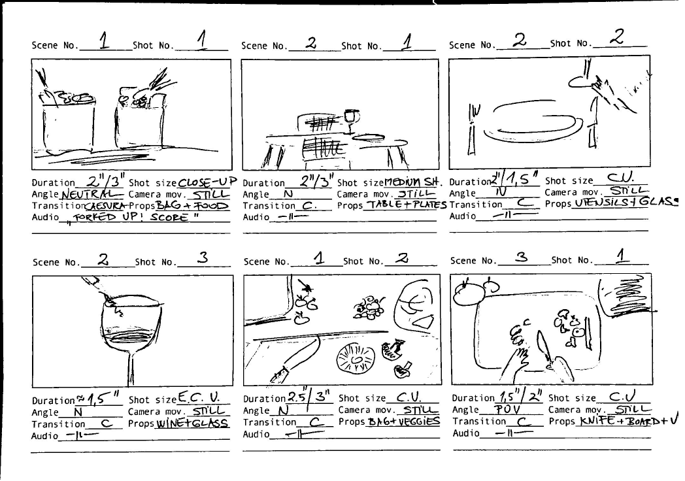
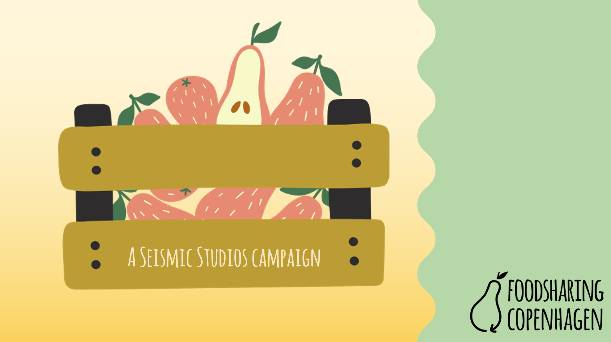

BASIC CONTENT
The theme Basic Content introduced us to concept development using video, dramaturgy, film language and media elements and recording and editing techniques. It covers the design, programming and production of simple digital content solutions for selected media platforms.
Foodsharing Copenhagen
05.02.01 - A campaign site including a video
05.02.03 - Storyboard
05.02.04 - Customer pitch
Assignment’s focus:
The aim is to create a campaign site that addresses one of the following two issues: help educate people to reduce food waste or inspire people to become volunteers in the Foodsharing Copenhagen Organization. The site should contain informational/educational/inspirational text, images and a video in a suitable layout and style.
My role in the project:
I was responsible for the direction during the filming of the main video as well as assisting in the shooting. I was in charge of filming the second video and also in charge of editing all the video materials for both movies. I was the one who coded the website. For the storyboard I drew part of the images.
What I learned:
I learned about video image composition, the different types of cameras and supporting tools when shooting video. I embedded videos via Youtube for the first time. I acquired basic editing skills in Adobe Premiere Pro and got familiar with the three main phases in filming - preproduction, production and postproduction.